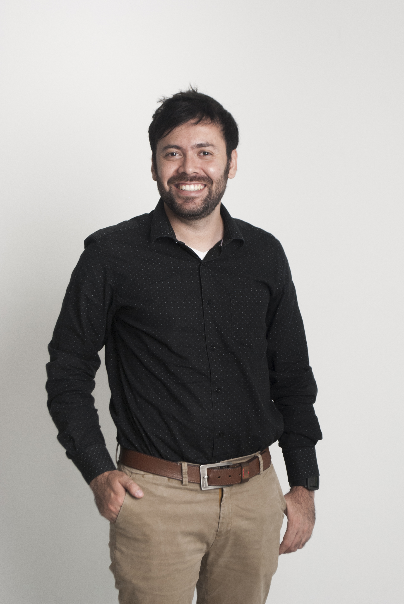

Hola, mi nombre es
Product Owner · Analista Funcional · UX/UI Designer con +10 años en la industria del software. Perfil híbrido diseño + ingeniería especializado en discovery de producto, gestión de backlog y liderazgo de equipos bajo Scrum. AI mindset real: uso Claude, NotebookLM y Gemini Studio/Stitch como parte de mi metodología de producto — no como experimento.
Soy Cristian, Product Owner y Analista Funcional basado en Cali, Colombia. Mi trayectoria nació en el diseño gráfico, evolucionó hacia la ingeniería de software y hoy converge en el rol de producto: esa intersección donde el diseño centrado en el usuario se encuentra con la viabilidad técnica y los objetivos de negocio.
He liderado el discovery completo de plataformas SaaS B2B, gestionado backlogs con 35+ Historias de Usuario para productos que sirven a millones de clientes, y actuado como Product Owner + Scrum Master en sistemas adoptados por más de 500 organizaciones. Mi diferenciador es el AI mindset aplicado: uso Claude, NotebookLM y Gemini Studio/Stitch directamente en mi flujo de trabajo.
Herramientas y metodologías:

Motor de recomendación inteligente entrenado con +6M clientes y +24M interacciones. 35+ HUs en 14 épicas: identity graph omnicanal, micro-frontend ccb.org.co, aprendizaje continuo y dashboard Power BI. Usé Claude para documentación dinámica publicada como web.
Agente de IA conversacional (Voz + Chat) sobre Genesys Cloud. 18+ HUs en 6 épicas: validación biométrica FaceTec, transacciones, ventas inbound/outbound y gestión de cartera. 15+ diagramas BPMN/Visio hasta v4.1.
Plataforma aduanera con extracción inteligente de documentos (OCR/IA) y generación de archivos EDI para Siglo XXI (DIAN). 36 HUs en 6 épicas. 11 diagramas de flujo en Visio. Matriz de trazabilidad completa.
Plataforma SaaS B2B de bienestar organizacional con agente IA basado en Eneagrama (0→1). Discovery completo: 20 HUs, JTBD + Gherkin + MoSCoW, prototipos Figma, brand identity completa. Stitch/Gemini para prototipado rápido.
Sistema integral de seguridad (Web + Mobile) adoptado por +500 localizaciones y +1.000 operativos. Rediseño v1→v2+: acceso biométrico facial, reconocimiento de placas, rondas GPS+QR, funcionamiento offline.
App de marketing voz a voz (referral marketing) que convierte clientes satisfechos en embajadores activos. Diseño UI completo en Figma, ownership del producto y gestión del equipo en ciclo de entrega rápida.
Plataforma fintech de supply chain finance (Reverse Factoring). Diseño en Figma (3 versiones). Gestión de equipo distribuido Colombia-India: 58 tasks en Jira, 6 desarrolladores, coordinación con liderazgo de UK.
Diseño de aplicación para iPad para Abbott Latam. Interfaz para fuerza de ventas y representantes médicos. Integración con Pitcher y Salesforce. UX optimizado para dispositivos táctiles en entorno farma.
Diseño de 4 aplicaciones para el ecosistema digital Baxter Latam: NutriBax (nutrición clínica), Nefroprotección v1 y v2 (nefrología), Caoba y Research (discovery). Cliente Fortune 500 en healthcare.
Plataforma web para agencias de reclutamiento estudiantil internacional. Gestión de admisiones, seguimiento de estudiantes y comunicación con escuelas. Diseño en Sketch, Balsamiq y OmniGraffle.
App de coaching y aprendizaje para iOS. Diseño pixel-perfect siguiendo las Human Interface Guidelines de Apple. Flujos de onboarding, sesiones de coaching y seguimiento de progreso personal.
Plataforma de eventos virtuales para el mercado americano. Diseño de salas virtuales, networking digital, stands de expositores y flujos de registro y acceso. Herramienta de referencia en el sector post-pandemia.
Plataforma SaaS multi-tenant B2B para gestión de competencias y estructura organizacional. Módulos: Configuración, Diccionario de Competencias, SSO por dominio corporativo. Diseño en Sketch + documentación funcional.
Discovery y rediseño de app móvil + web del Centro Colombo Americano. Entrevistas estructuradas con metodología UX (observación, pain points, ideas), diagramas BPMN, flujos web y mobile documentados.
Plataforma de entretenimiento para fans. Design System completo Cintrx UI con modo claro y oscuro. Componentes reutilizables, tokens de diseño y guía de estilos para el equipo de desarrollo.
Definición de requerimientos y estrategia de QA para plataforma de ciberseguridad en Houston, TX. Documentación funcional en Word y Excel para equipo de desarrollo. Proyecto de nicho de alto valor técnico.
Plataforma para contratar personas en modalidad de staffing: búsqueda por rol y skills, visualización de perfil y gestión del proceso. Service Blueprint completo + diseño en Figma/FigJam + gestión Gantt.
Plataforma web de revisión y anotación de diseños de empaque. Flujos de aprobación multi-stakeholder, herramientas de anotación visual y gestión de versiones de documentos. Jira + Confluence + Figma.
Plataforma de gestión de cuidado domiciliario que conecta familias, cuidadores, agencias y aseguradoras — procesando $500M+. Diseño para desktop y mobile con enfoque en accesibilidad y flujos multi-actor.
Plataforma mobile para compra, venta y gestión de bienes raíces en California. Gestión de agentes inmobiliarios, listados de propiedades y flujos de negociación digital. Diseño en Figma para iOS/Android.
Plataforma web para compra y venta de bienes raíces en Australia. Diseño de flujos de búsqueda, ficha de propiedad, contacto con agentes y proceso de oferta. Revisión de assets y diseño final.
App mobile para compra y venta de tarjetas de greeting en California. Catálogo de tarjetas, personalización, flujo de compra y envío digital. Diseño en Figma para iOS/Android con énfasis en experiencia emocional.
Plataforma web de gestión de pacientes médicos. Historial clínico, programación de citas, gestión de tratamientos y comunicación entre profesionales de la salud. Figma + FigJam para research.
Plataforma web para adultos mayores: organización del testamento de forma sencilla a través de tarjetas temáticas. Diseño inclusivo con tipografías grandes, contraste alto y flujos simplificados. Sketch.
Rediseño de plataforma para agencia digital americana. Arquitectura de información, wireframes de baja fidelidad en FigJam y diseño final en Figma. Enfoque en conversión y claridad de propuesta de valor.
Rediseño de plataforma y brand para consultora global de liderazgo con presencia en 26 países. Diseño de interfaces y assets visuales en Sketch + Illustrator. Coherencia visual global entre regiones.
Plataforma de exportación de café colombiano. Discovery y diseño de flujos para compradores internacionales, catálogo de fincas y cafés especiales, y gestión de pedidos de exportación. Figma + FigJam.
Plataforma para identificar y optimizar recompensas monetarias a través de políticas fiscales. Flujos de análisis financiero, reportes de ahorro identificado y recomendaciones personalizadas. Figma.
Rediseño web y desarrollo WordPress para el Centro Internacional de Agricultura Tropical. Arquitectura de contenidos, diseño en Figma e implementación WordPress. Documentación técnica entregada.
Sistema de seguimiento de candidatos (ATS) interno de Cafeto para gestión del proceso de selección de desarrolladores. Discovery, diseño de flujos y prototipado en Figma. Publicado en siklus.co.
Plataforma SaaS enterprise de gestión de servicios públicos (agua, energía, gas) SOC 2 Type 2. 5 años desarrollando con Sencha Ext JS, JavaScript, HTML5/CSS3. Code reviews, responsive design y optimización de performance en producción.
ERP para la industria de oil & gas americana. Diseño de interfaces y desarrollo frontend con Angular y C# .NET. Pipeline CI/CD en Bitbucket. Trabajo en sistema de alto volumen de datos y procesos críticos de negocio.
App mobile multiplataforma desarrollada en Flutter. Diseño en Sketch con roles Propietario y SuperAdmin. Modelado de datos con GraphML. Implementación de componentes UI nativos para iOS y Android.
INTELIGENCIA ARTIFICIAL
PRODUCTO & METODOLOGÍAS
UX / UI DESIGN
DESARROLLO & PROGRAMACIÓN
MARKETING & OTROS
05. ¿Trabajamos juntos?
Disponible para roles de Product Owner, Analista Funcional o Product Designer — remoto o híbrido.
Escríbeme 👋